운영업무 자동화
메일
-
SQL Server 관리자 메일 설정하는 방법에 대해 알아보자.
메일 설정 방법
-
관리 > 데이터베이스 메일 > 데이터베이스 메일 구성
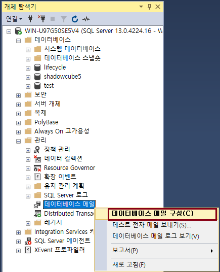
-
다음 클릭 후 경고 메시지는 확인
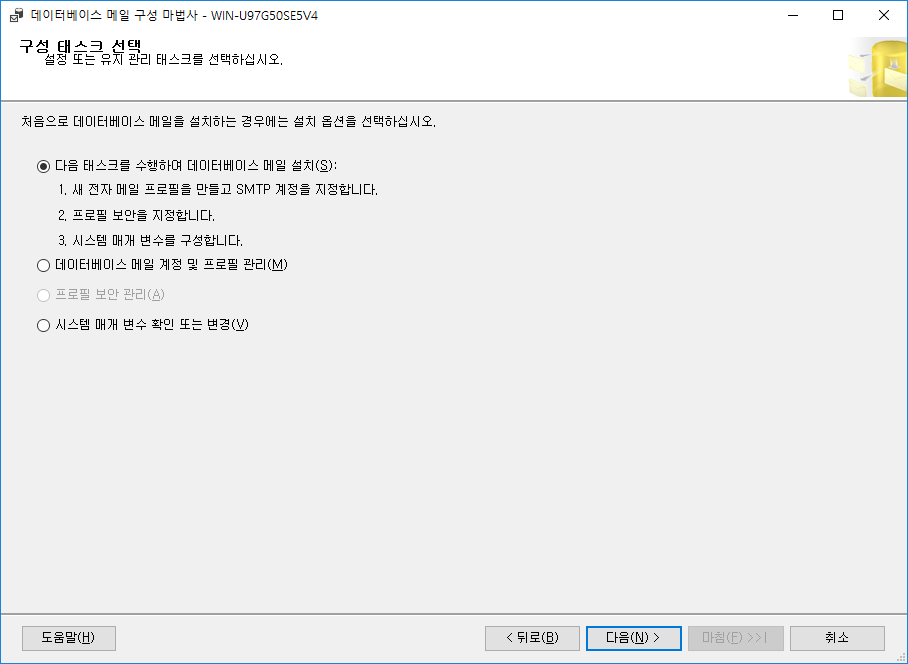
-
프로필 이름 입력 후 추가 클릭
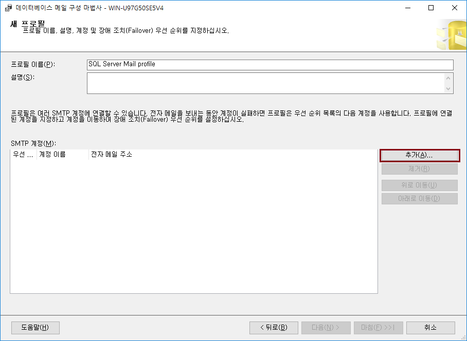
-
전자 메일 주소 입력, 서버는 localhost 로 입력 후 확인 > 다음 단계로 진행
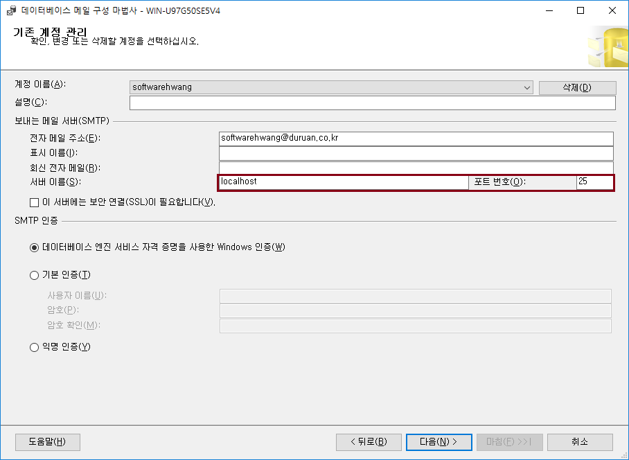
-
공개 프로필 탭 > 기본 프로필 > 예 선택
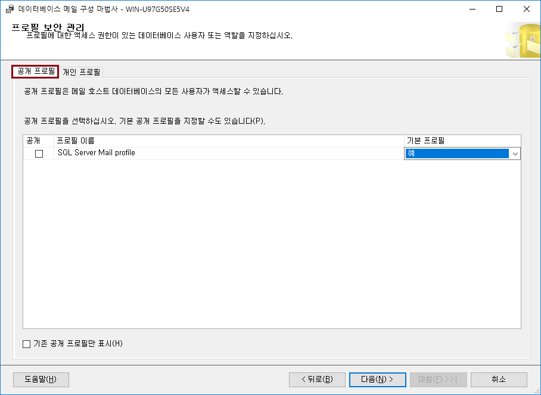
-
개인 프로필 탭 > 액세스 권한 체크 > 다음
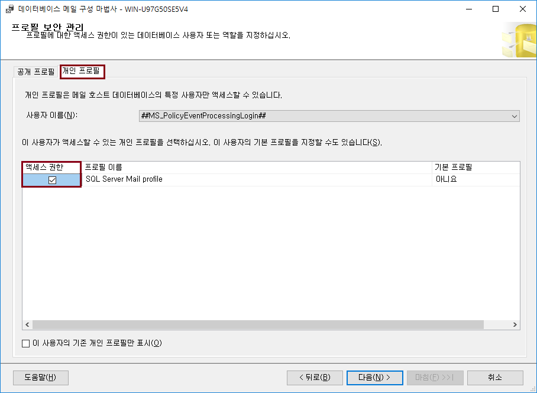
-
다음 클릭 후 마침
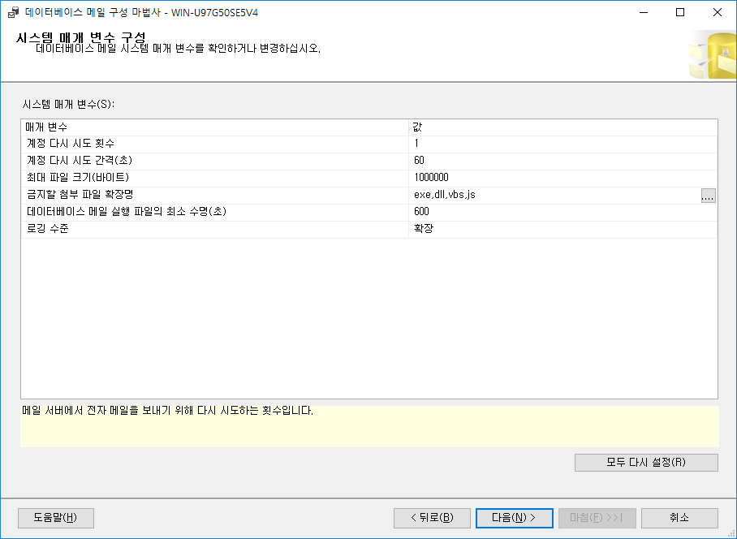
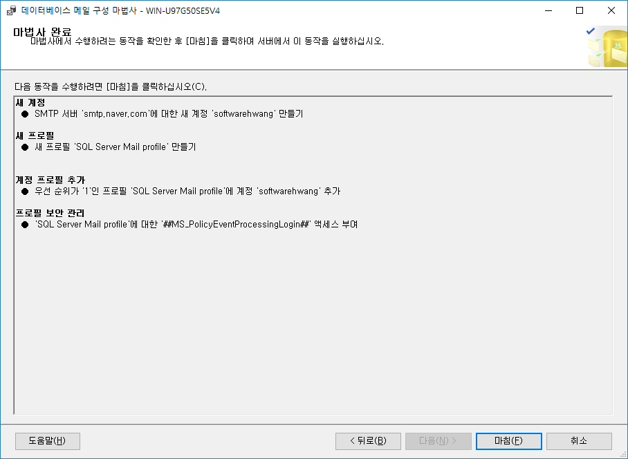
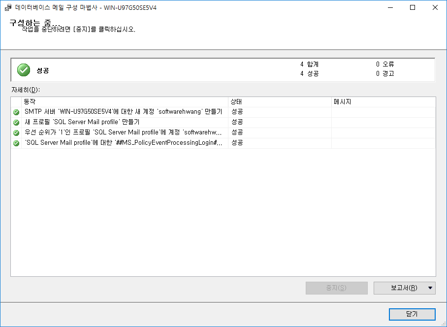
메일 테스트 방법
-
테스트 메일을 위해 관리 > 데이터베이스 메일 > 테스트 전자 메일 보내기
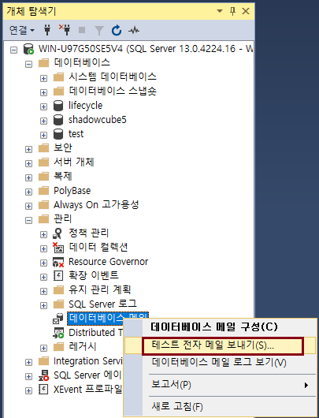
-
받는 사람 입력 후 메일 보내기 클릭
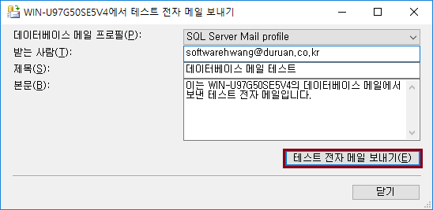
SQL Server 에이전트에서 메일 시스템 설정 방법
-
SQL Server 에이전트 > 속성
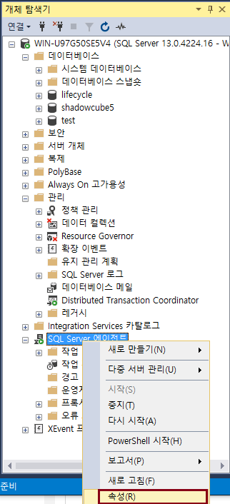
-
경고 시스템 > 메일 프로필 설정
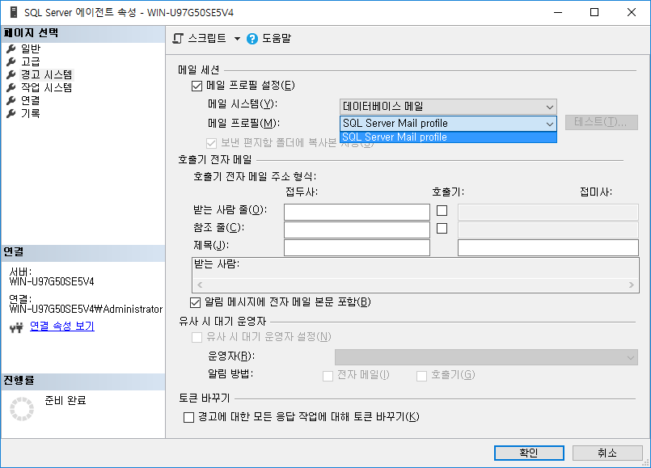
-
SQL Server 에이전트 다시 시작
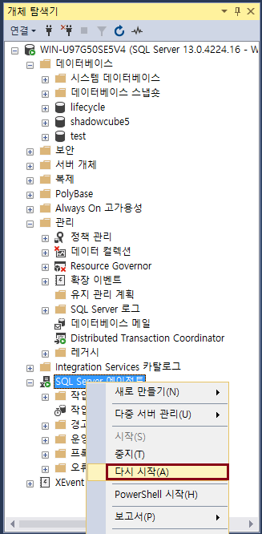
Let's Prcactice
-
자신의 시스템에 SMTP 서버가 설치되어있지 않다면, 설치 해보자.
처음으로
이전
다음